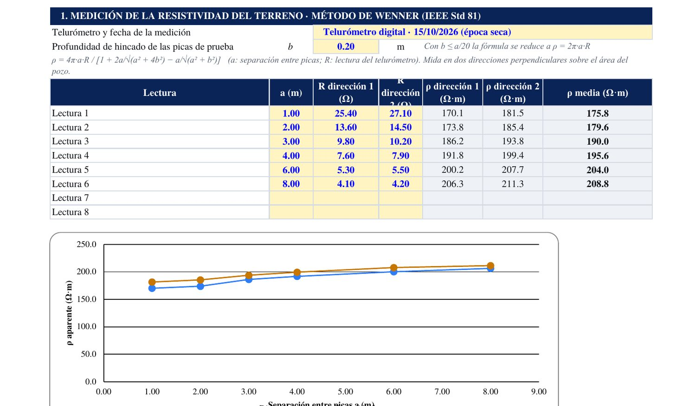
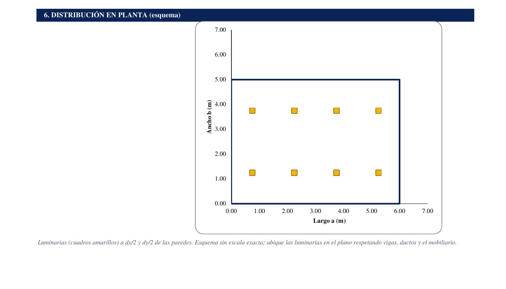
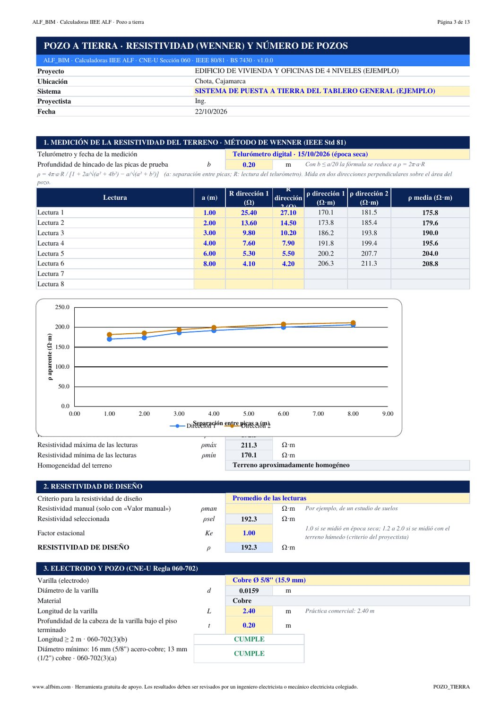
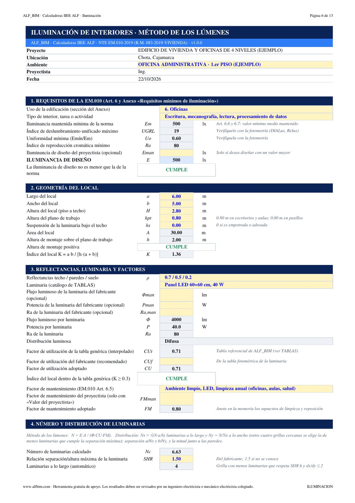
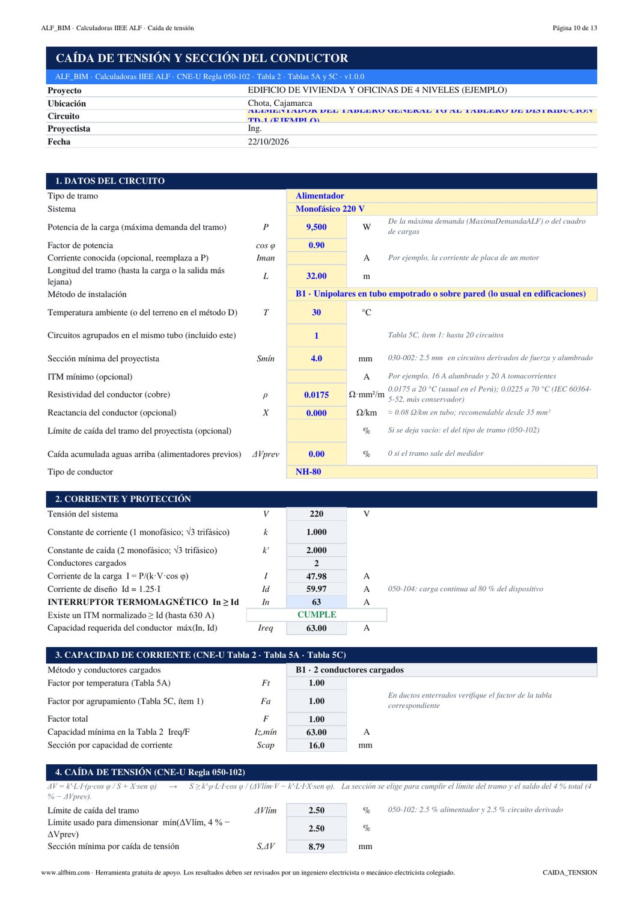
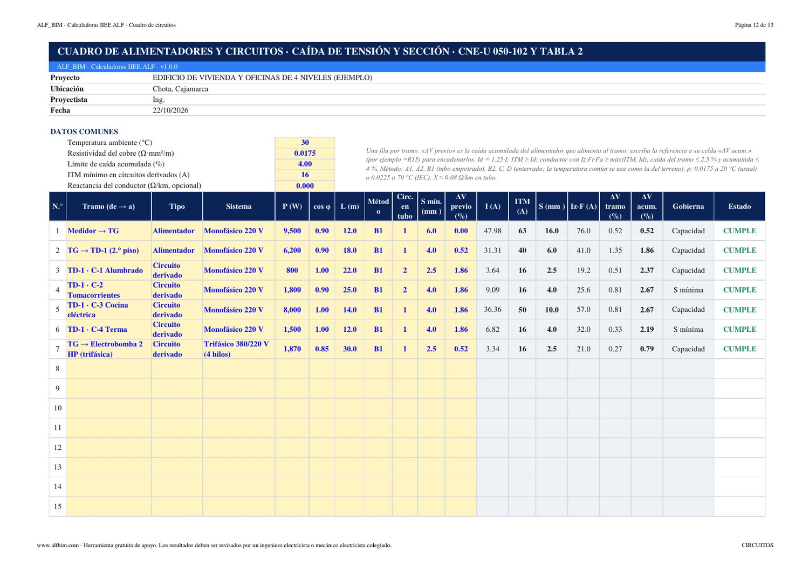

InicioProductosPlantilla Excel IIEE
Plantilla Excel IIEE
Pozo a tierra, iluminación y caída de tensión en un Excel gratis
Calcula la resistividad por el método de Wenner y el número de pozos, la iluminación con la EM.010-2019 y la sección del conductor por caída de tensión con el CNE-Utilización. Todo en un libro de Excel, con reporte en PDF para la memoria.
Gratis, sin licencia.
Gratis · versión 1.0.0 · Reporte de ejemplo (PDF)

Qué calcula
Las tres verificaciones que pide todo proyecto eléctrico
Un libro de Excel de 7 hojas, sin macros, con la normativa peruana vigente: el Código Nacional de Electricidad – Utilización (CNE-U) y la Norma EM.010 de 2019. Cada hoja sale en A4 para el reporte en PDF.
Pozo a tierra
Resistividad por Wenner, resistencia de un pozo con relleno tratado y número de pozos para llegar a la resistencia objetivo.
Iluminación
Método de los lúmenes con los valores del Anexo de la EM.010-2019, número y distribución de luminarias.
Caída de tensión
Corriente, interruptor, capacidad del conductor y sección por caída de tensión con la Regla 050-102.
Cuadro de iluminación
Hasta 25 ambientes en una sola tabla, con su uso y su iluminancia requerida.
Cuadro de alimentadores y circuitos
Hasta 25 tramos con la caída de tensión acumulada y el límite del 4 %.
Tablas normativas
Tablas del CNE-U, la EM.010-2019, BS 7430, rellenos, luminarias y factores de utilización.
Puesta a tierra
Cálculo de pozo a tierra por el método de Wenner
Ingresas las lecturas del telurómetro y la hoja calcula la resistividad del terreno, la resistencia de un pozo y cuántos pozos necesitas para cumplir la resistencia objetivo.
Resistividad del terreno
8 lecturas en 2 direcciones perpendiculares, con gráfico (IEEE Std 81).
- Resistividad de diseño: promedio, máxima o manual
- Factor estacional si mediste en época seca o húmeda
- Aviso de terreno homogéneo
Varilla y relleno
Varilla según la Regla 060-702 del CNE-U y resistencia del pozo con relleno tratado (IEEE Std 80).
- Longitud ≥ 2 m y diámetro mínimo
- Comparación de 7 rellenos
- Metrado del relleno y dosis
Número de pozos
Pozos en línea para la resistencia objetivo, con la Regla 060-712 y la BS 7430.
- ≤ 25 Ω, ≤ 10 Ω pararrayos o ≤ 5 Ω electrónicos
- Separación mínima entre pozos
- Conductor de puesta a tierra (Tabla 17)
La Tabla 17 del CNE-U se entra con la capacidad (A) del conductor de acometida, no con su sección; la hoja lo hace así, leída de la copia autenticada del MINEM.
Iluminación
Iluminación por el método de los lúmenes con la EM.010-2019
Eliges el uso del ambiente y la hoja trae los requisitos del Anexo de la EM.010 vigente (R.M. 083-2019-VIVIENDA): iluminancia mantenida, UGRL, uniformidad y Ra.
Em, UGRL, Uo y Ra
Listas desplegables por tipo de edificación y uso, con las 288 filas del Anexo.
- No usa la tabla de 2006 con «calidad A–E»
- Factor de mantenimiento a criterio del proyectista
Número de luminarias
Índice del local, factor de utilización, número de luminarias y grilla.
- Verificación de Em, separación y Ra
- Potencia instalada y W/m²
Distribución en planta
Esquema a escala con la ubicación de las luminarias en el ambiente.
- Cuadro de hasta 25 ambientes
- Listo para la memoria

Conductores
Caída de tensión y sección del conductor con el CNE-Utilización
Del dato de potencia a la designación del conductor, con las mismas tablas que usa MaximaDemandaALF, cotejadas con el CNE-U oficial.
Corriente e interruptor
Corriente de diseño 1.25·I (050-104) e interruptor termomagnético normalizado.
- Monofásico o trifásico
- Mínimo del proyectista
Capacidad del conductor
Tabla 2 del CNE-U con los factores de temperatura (5A) y de agrupamiento (5C).
- Cobre, PVC 70 °C
- Hasta 240 mm²
Sección por caída de tensión
Límites de la Regla 050-102: 2.5 % por tramo y 4 % en total.
- Longitud máxima del circuito
- Conductor de protección y tubería
El reporte
Así sale el reporte en PDF
Un edificio de vivienda y oficinas de 4 niveles en Chota, Cajamarca, como ejemplo. Mira el reporte completo (13 páginas) antes de descargar.




Por qué esta
Hecha con la norma vigente, no con la de siempre
La tabla de iluminación vigente
Muchas plantillas siguen con la tabla de 2006. Esta usa el Anexo de 2019, cotejado con dos copias de El Peruano.
1 492 comprobaciones, 0 diferencias
Verificación independiente con 80 casos aleatorios y casos límite, y probada en Excel de Windows.
Lo que no hace
Terreno homogéneo (sin mallas ni dos capas), sin cortocircuito. El UGRL y la Uo se verifican con DIALux o Relux.
Es una herramienta de apoyo: los planos y memorias de instalaciones eléctricas los revisa y firma un ingeniero electricista o mecánico electricista colegiado.
Línea eléctrica ALF
Del cálculo rápido al proyecto completo
MaximaDemandaALF
Cuadro de cargas, máxima demanda, alimentadores, interruptores y caída de tensión, con la memoria de cálculo en Word.
ElectricasALF
Circuitos, cuadro de cargas por tablero, diagrama unifilar y metrados por salidas, dentro de Revit.
PlanosALF
Crea y exporta en lote las láminas IE-01, IE-02… desde Excel, con el índice de planos.
Preguntas frecuentes
Antes de instalar
¿Qué versión de la EM.010 usa?
La vigente, aprobada por la R.M. 083-2019-VIVIENDA, con su Anexo «Requisitos mínimos de iluminación»: iluminancia mantenida (Em), UGRL, uniformidad (Uo) y Ra. No usa la tabla de 2006 con «calidad A–E».
¿Qué resistencia de puesta a tierra debo lograr?
Eliges el objetivo según el uso: hasta 25 Ω por la Regla 060-712 del CNE-U, 10 Ω para pararrayos o 5 Ω para equipos electrónicos (práctica recomendada). La hoja calcula cuántos pozos necesitas.
¿Calcula mallas de puesta a tierra?
No. El cálculo considera terreno homogéneo y pozos con varilla. Mallas y terrenos de dos capas quedan fuera de esta versión.
¿Los valores de los rellenos sirven para el expediente?
Son referenciales. Para el expediente usa la resistividad que garantiza el fabricante del relleno, en la opción «Relleno manual».
¿Qué resistividad usa en la caída de tensión?
0.0175 Ω·mm²/m a 20 °C por defecto, la usual en el Perú. Puedes cambiarla a 0.0225 (70 °C), más conservadora, y agregar la reactancia si la necesitas.
¿Tiene macros?
No. Es un Excel con fórmulas, sin macros. Las hojas están protegidas sin contraseña.
¿Quién firma los resultados?
Es una herramienta de apoyo. Los planos y memorias de instalaciones eléctricas los firma un ingeniero electricista o mecánico electricista colegiado.
Descarga la Plantilla Excel IIEE gratis
Excel de 7 hojas, sin macros: pozo a tierra, iluminación, cuadro de ambientes, caída de tensión y cuadro de circuitos. Antes de descargar puedes ver el reporte de ejemplo en PDF.
Versión 1.0.0 · 107 KB · SHA-256 7F33BDDCEB9F6459CAA3B1CBFF92273A9AFDC52909BEAEB2D6A59A0D369B6BDD